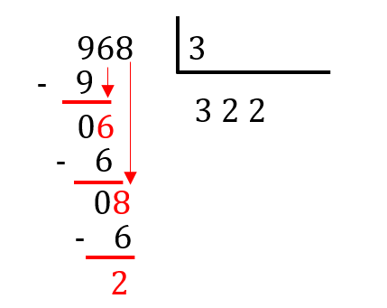
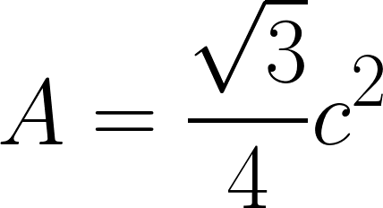

Opérations
Explications
Tout comme en mathématiques, une variété d’opérations existe en JavaScript. La plupart des opérations mathématiques sont aussi disponibles en JavaScript : l’addition, la multiplication, la soustraction, la division, l’exponentiation, la racine carrée, le modulo… Il existe de plus des opérations pour les chaînes de caractères, les listes, les valeurs booléennes et ainsi de suite.
Opérations sur les nombres
Ces opérations sont très semblables aux opérations mathématiques. Commençons par les opérations de bases, avec lesquelles tu es sûrement déjà familier.
-
L’addition : le symbole est exactement le même qu’en mathématiques (
+) et il s’utilise de la même façon. Par exemple :let x = 1 + 2 + 3;La variablexest égale à6. -
La soustraction : le symbole est exactement le même qu’en mathématiques (
-) et il s’utilise de la même façon. Par exemple :let x = 6 - 2 - 3;La variablexest égale à1. -
La multiplication : le symbole est un peu différent du symbole mathématique. Il s’agit d’un astérisque (
*). Il s’utilise toutefois exactement de la même façon. Par exemple :let x = 4*3*2*1;La variablexest égale à24. -
La division : le symbole est un peu différent du symbole mathématique. Il s’agit d’une barre oblique (
/). Il s’utilise toutefois exactement de la même façon. Par exemple :let x = 14/7; La variablexest égale à2. -
L'exponentiation : le symbole est un peu différent du symbole mathématique. Il s’agit de deux astérisques consécutifs (
**). Il s’utilise toutefois exactement de la même façon.1 Par exemple :let x = 5**2; La variablexest égale à25.
La racine carrée de son côté n’a pas de symbole particulier. Il faut donc avoir recours à un objet JavaScript natif : Math. Il s’agit d’un objet inclus dans JavaScript. Il n’y a rien à installer pour pouvoir y accéder. La fonction racine carrée est disponible dans cet objet sous le nom sqrt. Par exemple : let x = Math.sqrt(16); La variable x est égale à 4.
La fonction racine carrée est toutefois loin d’être la seule disponible sous l’objet Math. Il y a plus ou moins toutes les fonctions mathématiques : sinus, cosinus, logarithme naturel, valeur absolue, entier inférieur, entier supérieur…
L’objet Math contient aussi des constantes mathématiques comme π (Math.PI) ou le nombre d’Euler (Math.E).
Finalement, l’objet Math permet de générer une valeur aléatoire entre 0 et 1, avec la fonction Math.random(). Cette fonctionnalité peut être utile pour la création de certains jeux vidéos. Pour plus d’information sur l’objet global Math, tu peux consulter cette page2.
Pour terminer, il existe une autre opération mathématique, qui est représentée en JavaScript par un symbole. Il s’agit de la fonction modulo, qui correspond au symbole %. Cette opération retourne le reste d’une division. Par exemple, 5%2 retourne 1, puisque le plus gros multiple de 2 plus petit que 5 est 4. La différence entre 5 et 4 est de 1.
Cette opération peut te sembler très complexe. Pourtant, tu l’utilisais déjà au primaire. En effet, lorsque tu effectuais une division à la main, tu écrivais souvent le reste au lieu de la partie décimale. Par exemple :

Dans ce cas, tu aurais pu écrire 968÷3 = 322 reste 2. Le modulo retourne seulement le reste, donc 968%3 retourne 2.
Cette fonction peut entre autres être utile pour déterminer si un nombre est pair ou impair. En effet si le ce nombre modulo 2 retourne 0, il s’agit d’un nombre pair. Au contraire, si le résultat est 1, il s’agit d’un nombre impair.
Opérations sur les chaînes de caractères
Les chaînes de caractères peuvent aussi être additionnées avec le symbole +. Par exemple "a" + "b" retourne "ab". Le reste des opérations mathématiques retournent toutefois NaN lorsqu’utilisées sur du texte.
Il est aussi possible de retourner le caractère situé à un index précis de la chaîne avec la fonction charAt(). Par exemple "ab".charAt(1) retourne "b" (l’index commence à 0, comme avec les listes). Les chaînes peuvent aussi être traitées comme des listes de caractères. Pour cette raison, "ab"[1] retourne aussi "b".
La fonction toLowerCase() permet de rendre toutes les lettres d’une chaîne minuscules. Au contraire, la fonction toUpperCase() permet de rendre toutes les lettres majuscules. Par exemple : "AB".toLowerCase() retourne "ab" et "ab".toUpperCase() retourne "AB".
La fonction replace permet de remplacer une partie de la chaîne par une autre. Par exemple, "abc".replace("c", "a") retourne "aba".
Il existe plusieurs autres fonctions pour les chaînes de caractères. Elles sont répertoriées sur cette page.3
Opérations sur les listes
Ajouter un élément à une liste ne se fait pas comme une addition. Il faut plutôt utiliser la fonction push. Par exemple :
let A = ["A", "B"];
A.push("C"); //A est maintenant ["A", "B", "C"]
Pour trouver l’index d’un élément d’une liste, on utilise la fonction indexOf. Par exemple : ["A", "B"].indexOf("A") retourne 0. C’est normal puisque la numérotation commence à 0. Si l’élément n’existe pas, la fonction retourne -1. Par exemple : ["A", "B"].indexOf("C") retourne -1.
Pour supprimer un élément particulier d’une liste, on utilise la fonction splice. Par exemple :
let A = ["A", "B", "C", "D"];
A.splice(2, 1) //le premier argument (2) est l’index
//et le deuxième (1) est le nombre d’éléments à supprimer
//A est donc maintenant ["A", "B", "D"]
Il existe plusieurs autres fonctions pour les listes. Elles sont répertoriées sur cette page.4
Exercices
Complète la fonction convertirCelsiusFahrenheit. Cette fonction doit prendre pour entrée une valeur en degrés Celsius et la retourner (avec return) en degrés Fahrenheit. La règle de conversion est la suivante : la température en °F est égale à la température en °C multipliée par 9, puis divisée par 5 et finalement additionée de 32.
Exécuter
L'aire d'un triangle équilatéral (triangle dont les trois côtés ont la même mesure) peut être calculée avec la formule suivante, où A est l'aire et c la mesure d'un côté :

Complète la fonction aireTriangle(c) ci-dessous, pour qu'elle retourne (return) l'aire A d'un triangle équilatéral de côté c.
Exécuter
Complète la fonction nomPropre(nom) ci-dessous, pour qu'elle retourne (return) le nom propre nom avec une lettre majuscule en première position. Par exemple : nomPropre("paris") retourne "Paris".
Exécuter
Complète la fonction censure(fruits) ci-dessous, pour qu'elle retourne (return) une version de fruits sans le mot "kiwi" Par exemple : nomPropre(["pomme", "raisin", "kiwi", "pêche"]) retourne ["pomme", "raisin", "pêche"].
Exécuter
1 S.A., MDN web docs, (réf. du 12 octobre 2019), Expressions et opérateurs [en ligne], adresse URL: https://developer.mozilla.org/fr/docs/Web/JavaScript/Guide/Expressions_et_Op%C3%A9rateurs
2 S.A., MDN web docs, (réf. du 12 octobre 2019), Math [en ligne], adresse URL: https://developer.mozilla.org/fr/docs/Web/JavaScript/Reference/Objets_globaux/Math
3 S.A., MDN web docs, (réf. du 12 octobre 2019), String [en ligne], adresse URL: https://developer.mozilla.org/fr/docs/Web/JavaScript/Reference/Objets_globaux/String
4 S.A., MDN web docs, (réf. du 12 octobre 2019), Tableau (array) [en ligne], adresse URL: https://developer.mozilla.org/fr/docs/Glossaire/array